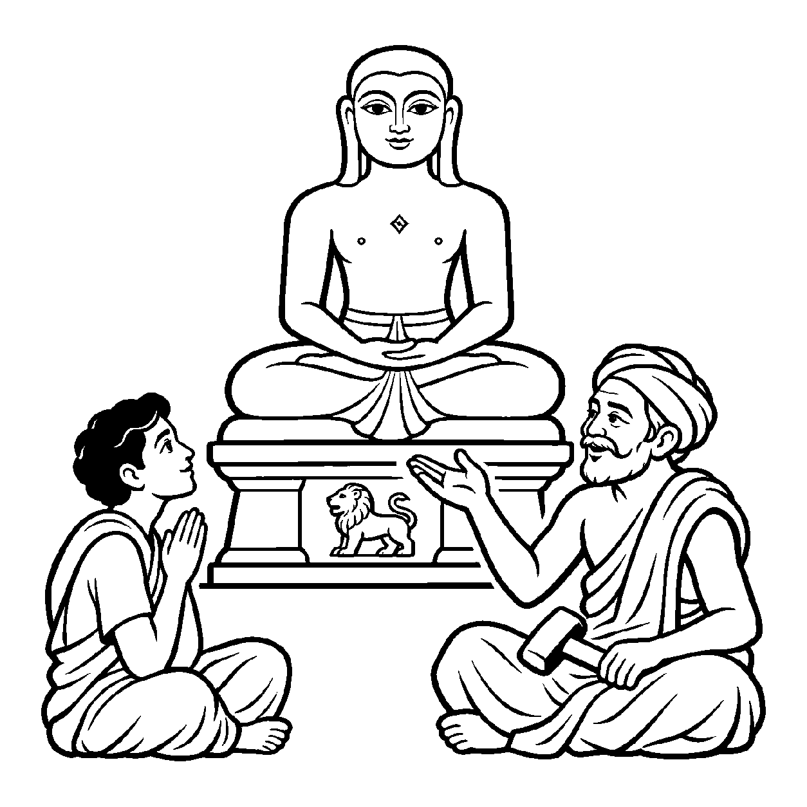

સુવર્ણનો એક જ સિક્કો હોય, પરંતુ તેની એક બાજુ પર રાજાની મુદ્રા હોય અને બીજી બાજુ પર રાજ્યનું ચિહ્ન હોય. સિક્કો એક જ 'સત્' છે, છતાં વ્યવહાર ચલાવવા માટે બંને બાજુઓને અલગ અલગ ઓળખવી અનિવાર્ય બને છે. તેવી જ રીતે જ્યારે પરસંગ્રહની અખંડ મહાસત્તાને પ્રથમવાર ભેદીને વાણીમાં એવું પ્રતિપાદન કરવામાં આવે કે "સત્ બે પ્રકારનું છે: એક ચેતન જીવ અને બીજું અચેતન અજીવ," ત્યારે તે 'અપરસંગ્રહભેદક વ્યવહારનય દ્રવ્યાર્થિક પ્રતિપાદક વ્યવહાર' કહેવાય છે.
પરસંગ્રહ સર્વત્ર કેવળ 'સત્' જ જોતો હતો. પરંતુ જો જીવ અને અજીવનો ભેદ ન સમજાય, તો મોક્ષમાર્ગનો પ્રારંભ જ થઈ શકે નહીં! આ નય મહાસત્તાને તોડ્યા વિના, વ્યવહારની ભાષામાં બ્રહ્માંડના તમામ પદાર્થોને બે મહાન શ્રેણીઓમાં વહેંચી આપે છે: જાણવા-જોવાવાળો 'જીવ' અને જડ-રૂપી 'અજીવ'.
આ નય આધ્યાત્મિક જાગૃતિનો પાયો છે. તે સાધકને ચેતવે છે કે તું જે દેહ, ધન કે મકાનમાં વસે છે તે અજીવ છે, અને તું સ્વયં અવિનાશી જીવ છે.
મહાસત્તાને ભેદીને, જીવ-અજીવ બે સાર;
પ્રથમ ભેદ પ્રગટાવતો, સંગ્રહભેદ વ્યવહાર.
દેહ અને જડ પદાર્થોને અજીવ જાણી, તેના મોહમાંથી મુક્ત થઈ પોતાના અવિનાશી ચેતનતત્ત્વમાં જાગ્રત રહેવું.

ધર્મક્ષેત્રમાં એક નવનિર્મિત જિનાલયમાં આરસપહાણની અત્યંત મનોહર જિનપ્રતિમા સ્થાપિત કરવામાં આવી હતી. ગામનો એક અતિભાવુક યુવાન પ્રતિમા સમક્ષ બેસીને કલાકો સુધી વિનંતી કરતો હતો: "હે પાષાણ પ્રતિમા! તમે મારી સાથે બોલો, કેમ કશું બોલતા નથી? તમે સાક્ષાત્ પ્રભુ છો ને?" જ્યારે પ્રતિમામાંથી કોઈ ઉત્તર ન મળ્યો, ત્યારે તે શંકા અને વિષાદમાં ડૂબી ગયો: "શું ધર્મ કેવળ પથ્થરની પૂજા છે? શું ભગવાન સાચે જ મૌન અને જડ છે?" તે એકાંત અદ્વૈતના ભ્રમમાં જડ અને ચેતનને એક માની બેઠો હતો, જેના કારણે તેના ચિત્તમાં ઘોર અંધકાર છવાઈ ગયો. હતાશ થઈને તે પોકારી ઊઠ્યો: "આ જડ અને ચેતનના ભેદમાંથી પરમ સત્યને પામવાનો સાચો માર્ગ કયો?"
તે જ ક્ષણે પ્રતિમાનું નિર્માણ કરનાર પ્રૌઢ શિલ્પી ત્યાં આવ્યો. તેણે યુવાનની પીઠ પર હાથ મૂકીને કહ્યું, "ભાઈ, અપરસંગ્રહભેદક વ્યવહારને સમજો. સત્ ના બે ભેદ છે: આ સુંદર આરસપહાણ એ 'અજીવ' પુદ્ગલ છે, અને આ મૂર્તિ જેના ગુણોનું પ્રતીક છે તે અરિહંત ભગવાન સાક્ષાત્ 'જીવ' તત્ત્વ છે! મૂર્તિ કેવળ આલંબન છે, જડ છે; પરંતુ જેના ગુણોનું સ્મરણ કરવાનું છે તે પ્રભુ અનંત જ્ઞાનવાન ચેતન છે. જડ અને ચેતનને એક ન ગણો." શિલ્પીના આ વિવેકપૂર્ણ વચનનું પાન કરતાં જ યુવાનનો ભ્રમ ભાંગી ગયો. તેને સમજાયું કે પૂજા પથ્થરની નહીં, પણ વીતરાગ ચૈતન્ય ગુણોની છે. તેના અંતરમાં શુદ્ધ ભેદજ્ઞાનનો દીવો પ્રગટી ઊઠ્યો.
જો આ નય કદાગ્રહ બને, તો મનુષ્ય જડ અને ચેતનને એટલા બધા શત્રુવત્ માની લે છે કે શરીરનું યોગ્ય પોષણ કે શાસ્ત્રો-મંદિરો જેવા પવિત્ર અજીવ ઉપકરણોનો પણ તિરસ્કાર કરવા લાગે છે. આવી એકાંત જડતાથી જીવ વર્તમાન વ્યવહારિક સાધના અને કર્તવ્યોની ઉપેક્ષા કરી બેસે છે અને ક્રમિક પરિણામોને સુધાર્યા વિના અકાળે પૂર્ણતાના મિથ્યા સંતોષમાં રાચે છે.
આ જ નય જ્યારે સમન્વયકારી બને છે, ત્યારે તે સાધકને અજીવ શરીર અને સાધનોનો ધર્મસાધનામાં સમ્યક્ ઉપયોગ શીખવીને આત્માને પરમાત્મા બનાવવાની સાચી દિશા આપે છે.